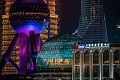
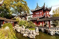
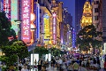

Multimedia
🔎 Video --- 🔎 Fotografias --- 🔎 Poema ---Apresento-vos então uma das melhores vistas quer de noite quer de dia, a cidade -- Xangai. VÃO ADORAR !! 🤩

Apresento-vos então uma das melhores vistas quer de noite quer de dia, a cidade -- Xangai. VÃO ADORAR !! 🤩
As fotografias que abaixo apresentado é a magnífica Torre de Pérola, um dos melhores jardins -- Jardim Yu e a rua mais famosa -- Rua Nanjin.
  
Xangai, a cidade que nunca dorme,
De luzes brilhantes e arranha-céus elevados,
Um lugar onde o passado e o futuro se encontram,
E a história e a modernidade se mesclam.
De dia, as ruas estão cheias de vida,
O tráfego é intenso, as pessoas apressadas,
Mas à noite, a cidade ganha nova vida,
Com suas luzes brilhantes e vistas deslumbrantes.
Xangai, cidade de oportunidades,
De negócios, de cultura e de vida,
Com uma atmosfera vibrante e energética,
É um lugar que conquista o coração de todos que a visitam.